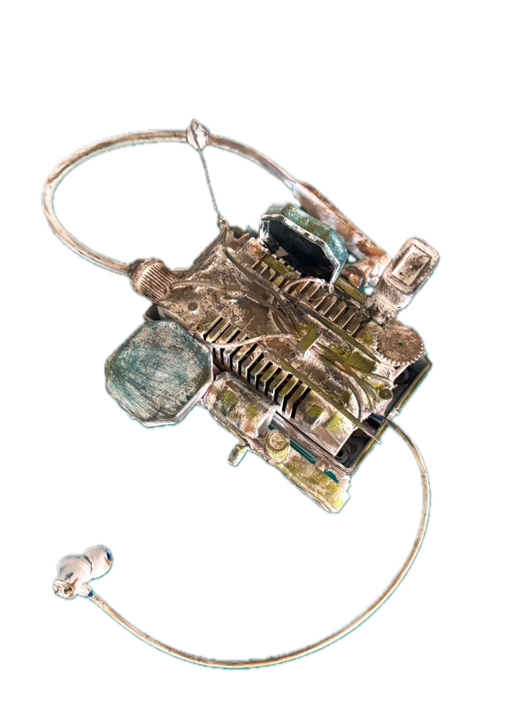
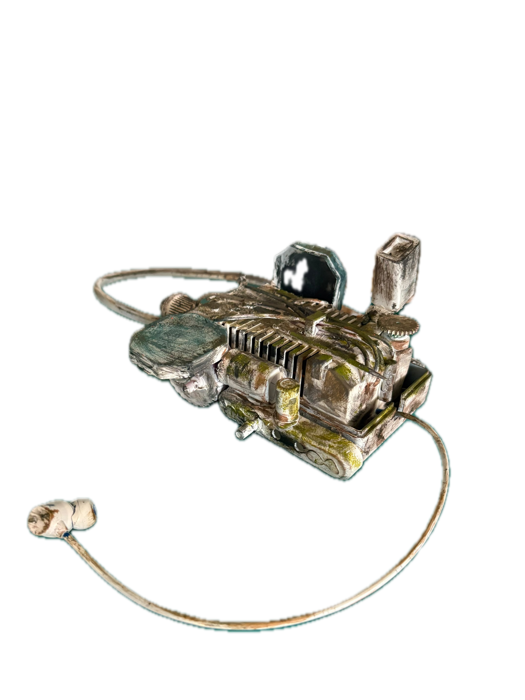

DACian Era
A speculative inquiry into a future where information is not permanently stored or disembodied, but encountered through material processes, environmental listening, and traces left behind.
Developed as design research within the Master of Design in Human-Centred Design curriculum. This archive documents the conceptual world, the deployed controlled dual-terminal prototype, and the new experimental direction in situated environmental listening.
Why This World?
What happens when digital information is no longer experienced as an infinite, weightless, instantly searchable cloud?
Contemporary interaction design operates under the persistent fiction that information is immaterial—floating in an invisible, weightless "cloud," instantaneously accessible, detached from geography, and permanently preserved. Yet digital memory consumes vast quantities of energy, relies on fragile physical subsea cables and data centres, and encourages an extractive relationship with knowledge.
DACian Era was born from a fundamental question: What if the relationship between the digital and the analogue fundamentally shifted? What if information did not seek you out through algorithmic push notifications, but instead remained suspended in physical substrates—in river silt, sand beds, masonry, and acoustic echoes—waiting for someone to travel there, listen, and interpret?
This is not a post-apocalyptic ruin or a bleak dystopia. It is a plausible, sensory future where humanity has renegotiated its contract with speed, permanence, and memory. In this world, damage is not treated as garbage, corrupted signals are mended rather than discarded, and knowledge requires bodily presence.
-
[01]
Signals are Found, Not Broadcast
Information does not demand attention. The observer must tune physical instruments to the resonant properties of the terrain.
-
[02]
Damage is Not Loss
Corrupted records are not discarded. Fracture and decay are normal conditions of material existence that invite tactile care and mending.
-
[03]
The Instrument as Lens
The Reader does not think on behalf of the user; it acts as a mechanical and sensory transducer, extending human auditory and haptic perception.
The World and Its Concepts
Understanding DACians, the practice of Fillámend, and the physical substrates through which memory resonates.
Who are the DACians?
DACians are the inhabitants and practitioners of this era. They do not maintain disembodied server farms or cloud subscriptions. Instead, they view reality as an interconnected field of physical processes. DACians possess an acute sensitivity to environmental acoustics, micro-vibrations, tidal rhythms, and the friction of particles.
Their knowledge systems are situated and communal: rather than consulting a centralized database, a DACian travels to an estuary, a dry lakebed, or a decommissioned stone foundation, using sensitive instruments to listen to the records lingering there.
What is Fillámend?
Fillámend is the core conceptual anchor of the DACian world. It is neither a proprietary technology nor a single mechanical part. Rather, fillámend is an encounter:
- It represents something that fills a gap where information has decayed.
- It describes the act that mends a broken connection between human attention and physical matter.
- It acts as an echo carried forward from earlier encounters.
- It gives an ecosystem a voice, translating environmental vibrations into audible harmonics.

The Reader
A dual-terminal apparatus combining a handheld field sensor and a stationary monitoring station.
The READER is the physical mediation tool developed for this world. In the physical realm, it takes the form of a handheld ergonomic form fabricated with weighted materials, embedded tactile switches, and bone-conduction transducers. In software, it is expressed through a synchronized dual-terminal interaction:
Stationary cartographic and cymatic monitor. Visualizes real-time Chladni particle physics, tracks spectrum sweeps, and aggregates recorded field logs.
Agile mobile sensor held in the researcher's palm. Sweeps carrier frequencies, emits acoustic layers, pulses with haptic feedback, and provides tactile mending.
The human interpreter. Listens for buried phrases, detects mechanical vibration shifts, locates the fillámend, and records qualitative observations.
FIELD RECEIVER (LAPTOP)
READER (HANDHELD SMARTPHONE)
How the Controlled Prototype Works
Documenting the existing prototype deployed at dacian-era.onrender.com: preset elements, synthetic audio, and dual-terminal synchronization.
The controlled prototype is live and publicly accessible at https://dacian-era.onrender.com. It serves as an interactive demonstration of the core speculative mechanics in a lab setting:
1. Communication & Telemetry Relay
The controlled prototype runs on a unified Node.js WebSocket server (`simulation/server.js`). When a user launches the laptop Field Receiver and scans the QR code with their mobile phone, both clients establish a persistent bi-directional WebSocket connection. Any frequency sweep, mode switch, or listening toggle made on the phone immediately updates the laptop's telemetry monitors.
2. Preset WATER and SAND Fields
In this controlled setup, the system provides two curated preset scenarios:
- FIELD 01: WATER (440 Hz target): Simulates submerged hydrostatic silt. Acoustic feedback uses low-pass filtering and deep sine harmonics. The narrative presents an old settlement buried beneath shallow water.
- FIELD 02: SAND (820 Hz target): Simulates dry shifting quartz. Acoustic feedback employs granular white-noise modulations and high friction frequencies. The narrative depicts wind eroding structures in an arid basin.
3. The 8-Step Operational Cycle
The user follows a defined sequence: Prepare → Connect → Select Field → Frequency Sweep → Resonant Lock (acoustic clarity + haptics) → Locate Fillámend → Continuous Touch Mending → Observation Logging.
While the controlled prototype successfully demonstrates the speculative mechanics, it has specific design boundaries:
-
[—]
Synthetic Rather Than Live Audio: Sound is generated mathematically by browser WebAudio oscillators and pre-recorded audio buffers rather than capturing the actual physical environment around the listener.
-
[—]
Predetermined Resonant Frequencies: The resonance points (440 Hz and 820 Hz) are hardcoded into the simulation rather than emerging from ambient terrain.
-
[—]
Stationary Dual-Device Expectation: Requires a simultaneous desk setup with both a laptop and smartphone connected to the same server, limiting spontaneous outdoor field exploration.
-
[—]
No Geographic Situatedness: Logs are stored with timestamps but lack geographical coordinates or an interactive map showing spatial filament accumulation.
Research & Design Process
Documenting the trajectory from theoretical inquiry and physical clay prototypes to digital dual-terminal interaction design.
1. Initial Inquiry & Project Framing
The project began with an investigation into the materiality of sound and the aesthetics of repair. As digital interfaces become increasingly slick and automated, human tactile engagement is flattened into glass screen swipes. We asked:
Rather than designing another utility app, we adopted a speculative design methodology. By imagining a world (the DACian Era) where digital clouds had dissolved into earth, we could defamiliarize modern computing habits and explore alternative interaction models.
2. Theoretical Lineage & Acoustic References
The project draws heavily on four bodies of thought:
- Acoustic Ecology (R. Murray Schafer): Understanding soundscapes as complex ecological systems that reflect cultural health and environmental balance.
- Deep Listening (Pauline Oliveros): Moving from involuntary hearing to intentional, embodied listening that expands human spatial consciousness.
- Cymatics & Chladni Figures (Ernst Chladni, 1787): The historic discovery that physical sand particles on vibrating plates rearrange into geometric nodal lines, proving sound has geometric form.
- Speculative Realism & Material Culture: Recognizing that non-human materials (water, quartz, silt) hold physical memory and agency.
3. Physical Prototyping & Iteration 1
Before writing any code, physical forms were sculpted using clay, polyurethane resin, and conductive copper foils. We explored handheld ergonomic silhouettes that would feel like archaeological tools rather than consumer electronics.

Early physical tests integrated small coin vibration motors and bone-conduction transducers. Participants reported that feeling the vibration in the fleshy pad of their thumb created an immediate intuitive sense of "proximity" before they could consciously identify the audio pitch.
4. Key Design Decisions & Rationale
Modern interfaces use predictive search bars that assume you already know what you want. Sweeping a continuous frequency spectrum forces the user to encounter liminal static, discordant intervals, and unexpected harmonics, reinstating discovery.
In digital systems, error correction algorithms discard broken packets without user awareness. By requiring a continuous tactile touch to "mend" a waveform, the interface instills a sense of responsibility and somatic care.
Public usernames and social profiles turn listening into performative content creation. A log in the DACian Era is a situated trace of attention left in a place, not an ego-driven identity token.
5. Testing Observations & Discovered Limitations
Testing the controlled prototype with participants revealed surprising somatic behaviors: users frequently closed their eyes while moving the frequency slider, relying entirely on the vibration pulses. However, testing also highlighted that staying seated in front of a laptop created an artificial "desktop" feeling that contradicted the speculative concept of field expeditions. This directly prompted the design of the new Experimental Reader.
The Experimental Direction
Evolving from controlled simulation presets toward unguided environmental listening, geographic exploration, voluntary element selection, and anonymous filament discovery.
The Experimental Reader is developed independently inside simulation/experimental/. It does not replace the deployed controlled prototype, but rather investigates what happens when listening becomes genuine, unguided, situated in actual physical geography, and collective.
Controlled Demonstration
- Audio Source: Preset WebAudio synthetic oscillators and audio buffers.
- Element Nature: Preset scenarios (Water 440 Hz, Sand 820 Hz) with predefined stories.
- Interaction Model: Synchronized dual-terminal expectation (Laptop + Smartphone paired).
- Geographic Scope: Abstract lab setting without geographic coordinates.
- Filament Nature: Predefined signal targets that must be found and mended.
- Deployment: Live on Render at dacian-era.onrender.com.
Unguided Field Practice
- Audio Source: Actual ambient environmental audio captured via device microphone.
- Element Nature: Voluntary practice of attention chosen by the listener (NOT auto-detected).
- Interaction Model: Phone is primary field device with full map access; laptop provides overview.
- Geographic Scope: Situated OpenStreetMap cartography with Indian geographic context.
- Filament Nature: Records of attention and encounter created anywhere by anyone.
- Deployment: Independent experimental application in
simulation/experimental/.
In the experimental Reader, an element is not an automated acoustic classifier. Choosing WATER does not mean the microphone detected water, and choosing SAND does not mean the user is on a beach. Rather, an element is a voluntary choice of attention—how the observer chooses to listen and respond to an environment.
WATER
Attending to transitions, fluid movements, ongoing background drones, and the ways separate sounds blend and carry across distances.
SAND
Attending to friction, isolated cracks, particulate details, what remains behind after a louder event ceases, and the physical resistance of structures.
In the Indian context and across complex urban and ecological landscapes, places are shaped by overlapping historical, civic, and natural layers—waterways, transport corridors, residential enclaves, and informal markets.
A filament is not an anomaly created by the system. It is created solely when a human being pauses, listens to their surroundings, and leaves a record. The Reader’s map tracks the accumulation of these encounters into three archival states:
- Untraced: Areas with no recorded listening encounters—a gentle invitation for someone to contribute attention.
- Traced: One or two isolated listening observations have been anchored here.
- Layered: Multiple listeners have logged observations over time, revealing different temporal and sensory interpretations of the same spot.
By developing the experimental Reader as an unguided field instrument, we test whether people will voluntarily participate in building an acoustic archive without gamified badges or algorithmic incentives.
Reflection & Open Questions
What the project enables, what it cannot yet do, and the ethical dilemmas of environmental sensing.
What the Project Achieves
DACian Era demonstrates that speculative world-building can be concretely embodied through functioning hardware and interaction prototypes. It moves the discourse of speculative design beyond gallery posters into interactive devices that people can actually hold, tune, and listen through. It creates an evocative, defamiliarizing experience that makes participants conscious of ambient soundscapes they typically ignore.
What it Cannot (and Should Not) Claim
The system does not claim to use artificial intelligence to "solve" listening or translate hidden animal languages. A microphone captures a physical mixture of acoustic vibrations; frequency filtering can isolate frequency bands, but it cannot recover information that was never there. We deliberately avoid claiming pseudo-scientific certainty, maintaining the Reader as an interpretive poetic apparatus.
- Acoustic Privacy & Public Space: How do we balance environmental microphone listening with the privacy of passersby whose conversations might be inadvertently captured? The experimental Reader enforces anonymous local processing and explicit opt-in sharing to honor this boundary.
- Ephemeral vs Permanent Archives: Should filaments persist forever, or should they naturally fade and erode over time, mimicking the physical substrates (sand and water) they represent?
- Communities of Practice: Will listeners naturally adopt distinct WATER or SAND observational styles, or will they treat the choice casually?
About the Maker & References
Design research situated between human-centred systems, sensory perception, and speculative material worlds.
Aabha Wagh
Focused on human-centred design, design research, systems, perception, speculative worlds, and invisible interactions between people, materials, and environments.
Theoretical Texts
- • Schafer, R. Murray. The Soundscape: Our Sonic Environment and the Tuning of the World (1977).
- • Oliveros, Pauline. Deep Listening: A Composer’s Sound Practice (2005).
- • Ingold, Tim. Making: Anthropology, Archaeology, Art and Architecture (2013).
- • Haraway, Donna. Staying with the Trouble: Making Kin in the Chthulucene (2016).
Frameworks & Tools
- • WebAudio API: Real-time biquad filtering, spectral Fourier analysis, oscillator synthesis.
- • HTML5 Canvas: Chladni mathematical cymatic simulation and waveform oscilloscope.
- • Leaflet & OpenStreetMap: Geospatial cartography with dark mineral styling.
- • Node.js & WebSocket (ws): Low-latency bi-directional multi-client telemetry relay.
THE ARCHIVE ENDS HERE.
THE FIELD BEGINS.
Choose whether to experience the controlled prototype deployed with dual-terminal synchronization, or enter the new experimental unguided field reader.